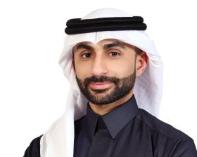

The group started in 2024 and is growing. We are glad to have a motivated team working on interesting problems.

I joined KFUPM as an Assistant Professor in 2024, after completing my PhD at Georgia Institute of Technology where I worked on programmable piezoelectric metamaterials for wave control, nonreciprocal propagation, and energy harvesting.
My research focuses on how periodic electromechanical structures interact with elastic waves, and how electrical circuits can be used to digitally program that interaction in real time. I care about both the underlying physics and the experimental realization of these ideas.
I am also affiliated with the Interdisciplinary Research Center for Intelligent Manufacturing and Robotics at KFUPM.
We are looking for motivated students who enjoy working on problems that combine mechanics, materials, and wave physics. Both theoretical and experimental work are part of what we do.